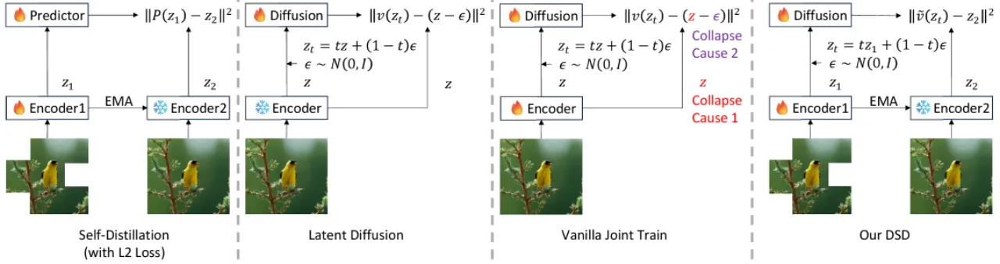
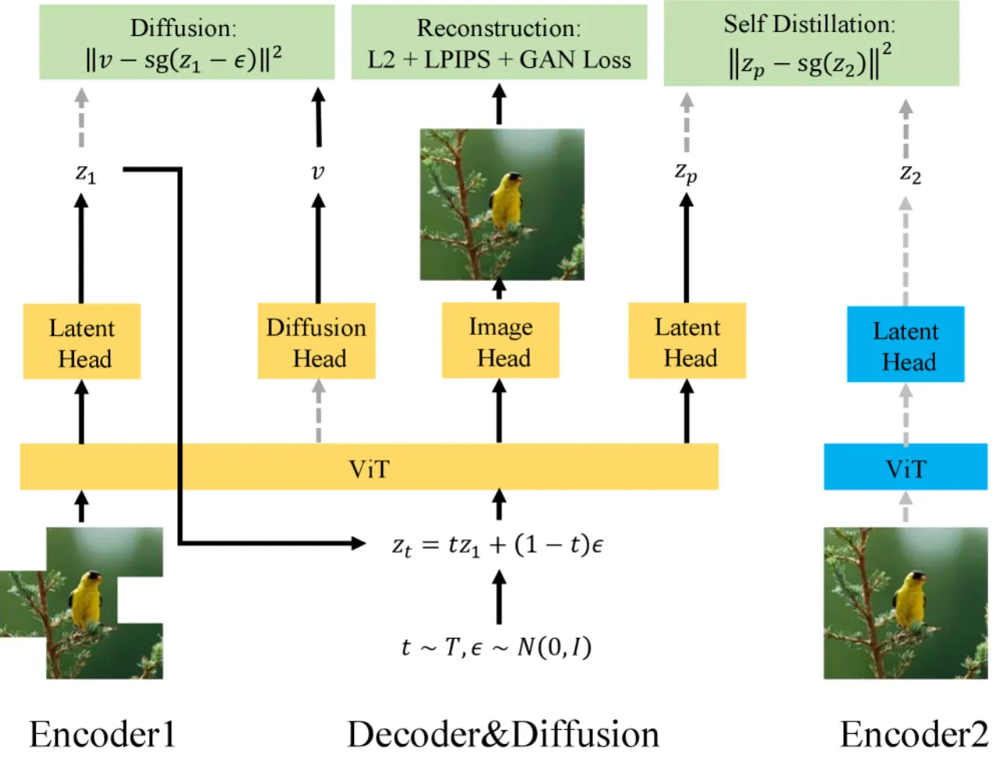
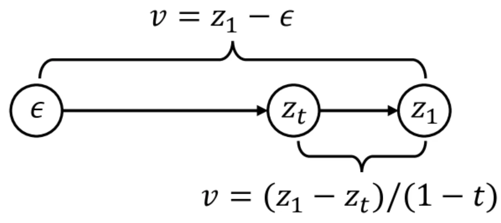
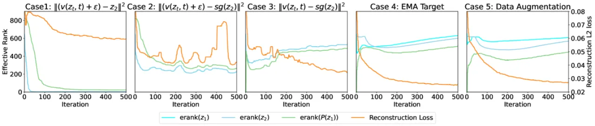
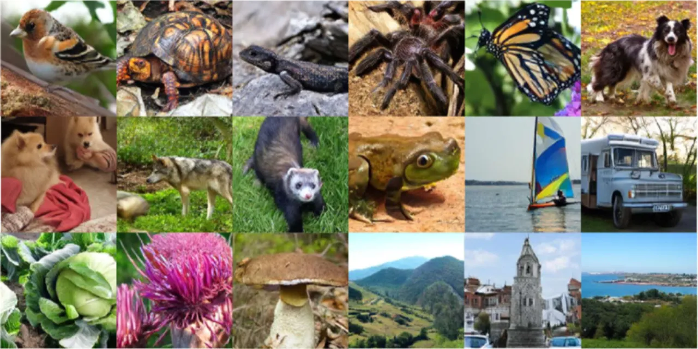

本文提出将编码器（encoder）、解码器（decoder）与扩散网络（diffusion network）整合为一个单一可训练模型，彻底打破传统 Latent Diffusion Model（LDM）三阶段分步训练的桎梏。 核心贡献在于识别了联合训练失败的根本原因——"Latent Collapse"（潜空间坍塌），并提出 Diffusion as Self-Distillation（DSD） 框架加以解决。 DSD-B（205M 参数）仅需 50 个训练 epoch，在 ImageNet 256×256 上取得 FID=4.25，远优于参数量大 3–5 倍的基线方法。
当前主流 Latent Diffusion Model（如 Stable Diffusion、DiT）均依赖"三件套"架构：独立的 VAE 编码器、VAE 解码器与扩散网络，三者依次独立训练。 这一设计带来三大痛点：无法统一到现代视觉基础模型（Vision Foundation Model）、多阶段优化导致次优性能、VAE 组件占用约 20% 参数量并增加推理延迟。 本文将此问题重新定义为一个无监督表征学习挑战，并借鉴 Self-Distillation 方法（如 DINO、SimSiam）避免表征坍塌的机制，提出端到端联合训练方案。
"We unify these three components into a single trainable network, enabling end-to-end optimization and integration with modern vision foundation models."

直接将 VAE 与扩散网络进行端到端联合训练会导致 Latent Collapse——潜变量的有效秩（effective rank）骤降至接近 1，表征退化，生成质量崩溃。 论文识别出两个根本原因：
L2 扩散损失隐式包含方差惩罚项，迫使编码器将所有潜变量压缩至均值附近，导致表征空间坍塌。
Self-Distillation 理论要求 erank(z₂) > erank(P(z₁,t,ε))。标准速度预测（velocity prediction）输出全秩噪声，打破此条件，稳定机制失效。
DSD 通过两项关键设计解决 Latent Collapse，并在单一 ViT 主干上构建统一架构，用三个轻量任务头分别处理编解码与扩散。

对目标潜变量 z₂ 施加 stop-gradient 算子，切断方差惩罚的梯度路径，消除 L2 损失对编码器方差的隐式约束：
ℒ_DSD = 𝔼t ‖ṽ(z_t, t) − sg(z₂)‖²
同时引入 Detached Velocity Loss，为扩散头提供完整梯度信号： ℒ_velo = 𝔼t ‖v(z_t, t) − sg(z − ε)‖²
论文通过数学推导证明，速度预测与干净潜变量预测在期望意义下等价：
ℒ_z = 𝔼t wt 𝔼 ‖ṽ(z_t, t) − z‖²
此等价性迫使 predictor 在学习过程中充当"低通滤波器"（low-pass filter），输出有效秩低于输入的表征，从而满足 Self-Distillation 的 Rank Differentiation 稳定条件。

借鉴 DINO/BYOL 中的 Momentum Encoder：Target 分支权重通过指数移动平均（EMA，衰减率 0.99）平滑更新，减少训练波动。 Online 分支施加强增强：75% 比例的随机 Masking、Gaussian Blur、Color Jittering、Solarization，进一步强化 Rank Differentiation。

DSD 的总损失由以下部分组成：
在 ImageNet 256×256 类别条件生成任务上评估，使用 gFID、sFID、Inception Score（IS）作为主要指标。 采用 Euler 采样器，250 步扩散步数（使用 CFG 时额外指定引导强度 1.5）。 训练使用 Muon 优化器，学习率 1e-4，梯度裁剪范数 3.0，在 8 张 NVIDIA A800 GPU 上训练。
| 方法 | VAE 参数 | 主模型参数 | 总参数 | Epochs | gFID↓ (w/o CFG) | sFID↓ (w/o CFG) | gFID↓ (w/ CFG) |
|---|---|---|---|---|---|---|---|
| DiT-XL/2 | 84M | 675M | 759M | 1400 | 9.62 | 6.85 | 2.27 |
| SiT-XL/2 | 84M | 675M | 759M | 1400 | 8.61 | 6.32 | 2.06 |
| MAR-L | 66M | 945M | 1011M | 800 | 2.35 | — | 1.55 |
| REPA-E (800ep) | 70M | 675M | 745M | 800 | 1.69 | 4.17 | 1.12 |
| LightningDiT (800ep) | 392M | 675M | 1067M | 800 | 2.05 | 4.37 | 1.25 |
| DSD-S（本文） | — | 42M | 50 | 13.44 | 11.74 | 7.89 | |
| DSD-M（本文） | — | 118M | 50 | 6.38 | 9.79 | 4.38 | |
| DSD-B（本文） | — | 205M | 50 | 4.25 | 8.96 | 3.35 | |
注：所有数值均直接引用论文原文。绿色为本文方法结果，橙色为当前同类最优（SOTA）。 DSD-B（205M）在仅 50 epochs 下的表现优于 DiT-XL/2（759M，1400 epochs），参数量节省 73%，训练量节省 96%。 REPA-E 在更大参数与更多 epochs 下仍保持更优 FID，但其 VAE 与扩散网络独立训练。

论文通过逐步添加各设计组件的消融实验（如图 2 所示）验证了每个模块的必要性：
在 8 张 NVIDIA A800 GPU 上，每个 epoch 的墙钟时间：DSD-S 约 14.0 分钟，DSD-M 约 19.7 分钟，DSD-B 约 27.9 分钟。 50 epochs 总训练时间 DSD-B 约 23 小时，大幅低于基线方法所需资源。
论文原文："Due to computation resource constraint, we do not scale DSD to larger model sizes aligned with our baselines." 目前最大模型 DSD-B 仅有 205M 参数，远小于 DiT-XL/2 的 675M 主模型，更未达到 MAR 的 945M 规模。 大规模模型下 DSD 的性能上界及扩展规律尚未验证。
论文原文："We do not conduct experiments for verifying the effectiveness of our DSD as an unsupervised learning method." DSD 框架理论上兼容无监督表征学习，但论文中仅评估了类别条件图像生成任务，未在下游迁移学习或线性探针等任务上验证表征质量。
DSD-B 的 sFID（空间 FID）为 8.96（无 CFG），而 REPA-E 仅为 4.17，LightningDiT 为 4.37。 sFID 对局部空间结构更敏感，较弱的 sFID 表明 DSD 在细粒度空间一致性上仍有提升空间， 可能与单一 ViT 共享特征导致编解码与扩散之间存在任务冲突有关。
所有实验均在 ImageNet 256×256 类别条件生成任务上进行，未验证文本条件生成、更高分辨率（如 512×512、1024×1024）或其他领域（医学图像、视频生成等）的有效性。 端到端联合训练在数据分布差异较大时是否仍能防止 Latent Collapse 尚不明确。